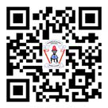

Utangulizi
Kitabu cha Kusoma kimetayarishwa kwa kuzingatia Mtaala na Muhtasari wa Elimu ya Msingi Darasa la Kwanza na la Pili wa mwaka 2023, uliotolewa na Wizara ya Elimu, Sayansi na Teknolojia. Kitabu hiki ni Toleo la Pili lililoboreshwa kutoka Toleo la Kwanza lililochapishwa mwaka 2018 kwa kuzingatia Mtaala wa Mwaka 2016.
Lengo la kitabu hiki ni kumwezesha mwanafunzi kujenga umahiri wa kusoma kupitia shughuli mbalimbali za ujifunzaji katika maeneo yafuatayo:
- 1. kutambua sauti na herufi/ kutambua herufi na fanya kwa tahajia za vidole herufi;
- 2. kutambua uhusiano wa sauti na herufi/ kutambua herufi na uhusiano wa herufi na tahajia za vidole;
- 3. kusoma kwa ufasaha; na
- 4. kusoma na kusikiliza kwa ufahamu/ kusoma na kutazama video ya lugha ya alama kwa ufahamu.
Jifunze zaidi kupitia maktaba mtandaohttps://ol.tie.go.tz au ol.tie.go.tz

Taasisi ya Elimu Tanzania